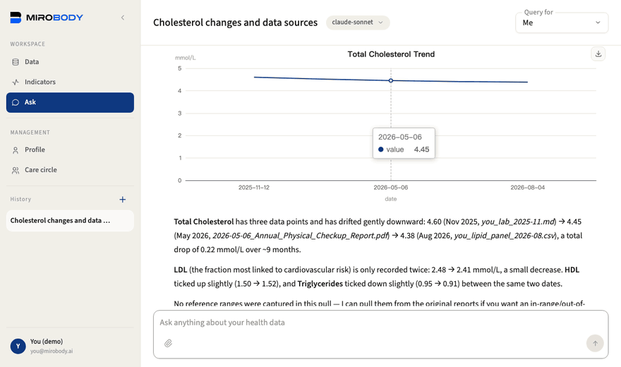

MIROBODY
Turn scattered health data into
answers you can trace.
Lab reports, wearables and genetic files in one
self-hosted
record.
./deploy.sh
+ one model key
or every model local, on llama.cpp

317/317
checkup-panel coverage · Apache-2.0 ·
github.com/thetahealth/mirobody